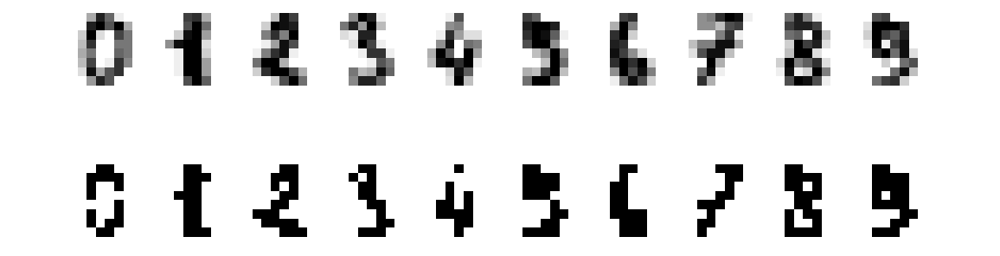
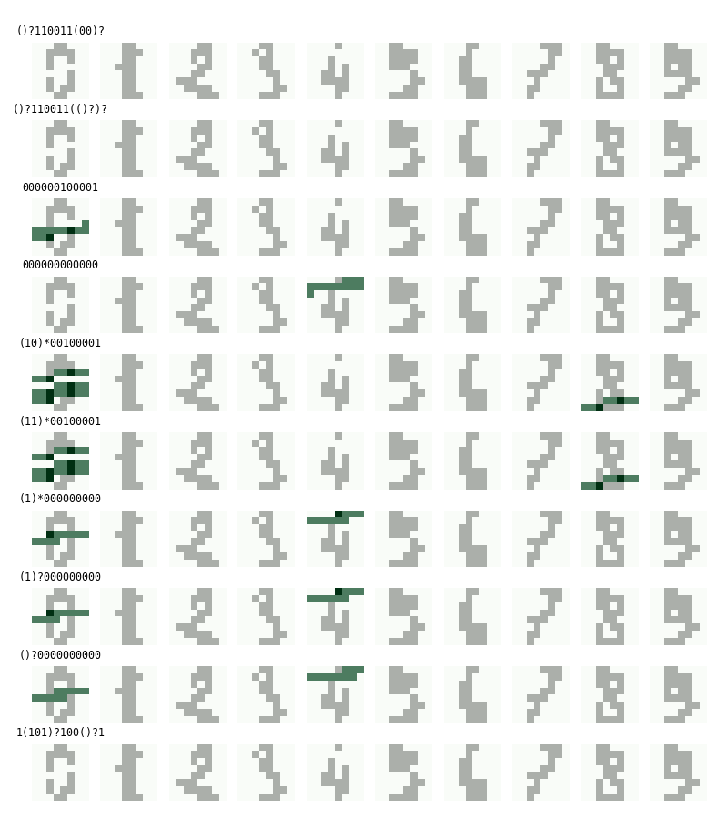

Can regular expressions be used to featurize images for classification?
A few days ago, when the question first popped into my head, my guess was: probably. My reasoning went something like this:
- Neural networks are good at image classification because they learn to find patterns.
- Regular expressions are used for pattern matching.
- Therefore, regular expressions might be good at image classification.
After conducting a cursory literature review (translation: I did a Google search) and coming up empty-handed, I decided to give it a shot. I chose to tackle a known "easy" problem: classifying images of handwritten digits. If the method worked for digit classification, I could then adapt it to more complex scenarios.
Problem description
I started by defining a simple featurization process:
Given K regexes, we'll take each image in our dataset, binarize it, flatten it into a string, and count the number of times each regex matches the image string. So for each image, we'll end up with a length-K array where the i-th element is the number of times the i-th regex matched the image.
There are plenty of other ways we could featurizing images using regexes. I chose this one for its simplicity.
I also defined an evaluation method:
To evaluate a particular set of K regexes, featurize the dataset, train an SVM on the featurized training data, then compute the SVM's classification accuracy on the featurized test data. As a baseline, compare the results against an SVM trained on the raw pixels of the image (i.e., the dataset featurized with the identity feature map).
Having decided on a featurization strategy and evaluation method, I was left with the difficult part: finding good regexes. I'd briefly played with the DEAP evolutionary algorithm framework over winter break, and had been itching for another excuse to use it. This was the perfect opportunity.
Evolving regexes
The basic idea behind the evolutionary algorithm (EA) is as follows: Starting with an initial generation of regexes, measure how good each regex is and discard the ones that aren't so promising. Combine and mutate the remaining regexes to form a new generation of regexes. Repeat as needed.
Because input images are limited to binary strings, it would be a waste of time to allow the EA to generate arbitrary regexes. I decided to limit the alphabet of regex components to five elements:
regex_comps = ['0', '1', '(', ')?', ')*']
My assumption is that most meaningful regexes acting on binary strings can be made using components drawn from regex_comps.
Next, I set up the EA:
- I defined a single individual as a length-12 array of integers between 0 and 4 (inclusive). Each integer is an index into
regex_comps. For example, the individual[0, 1, 0, 1, 2, 3, 2, 3, 2, 4, 2, 4]corresponds to the regex0101()?()?()*()*. - I defined a population as a collection of 512 individuals. Each individual in the population was initialized by randomly selecting 12 integers between 0 and 4 (inclusive).
- I specified two-point crossover as the mating operator.
- I specified uniform random selection as the mutation operator.
- I specified tournament selection as the selection operator.
- Finally and most importantly, I defined a custom notion of fitness: To compute the fitness score (higher is better) of a particular individual, convert the individual to a regex, then count the number of times the regex matches each image in the training set. Then aggregate (sum) the match counts by class and compute the negative entropy of this array.
In essence, my fitness function likes regexes that make the classes more easily separable: A high-fitness regex is one that matches examples from one class significantly more than those from other classes. A low-fitness regex is one that matches examples from all classes to roughly the same degree.
Below is a comparison of the entropies of two arrays, which represent match counts. E.g., the match counts [100, 12, 11] indicate that the first regex had 100 matches among Class 0 examples, 12 matches among Class 1 examples, and 11 matches among Class 2 examples.
>>> from scipy.stats import entropy
>>> -entropy([100, 12, 11]) # Matches Class 0 examples disproportionately often
-0.61126771799804991
>>> -entropy([99, 93, 90]) # Matches examples from all classes fairly evenly
-1.0978237788944929
Note that we only have three classes in this example, whereas we have 10 in digit classification (one per digit).
(The inspiration for using entropy comes from decision tree learning, where it is used to compute the information gain of a split.)
Dataset
For convenience reasons, I decided to use the handwritten digits dataset built into scikit-learn. The dataset consists of ~1800 8x8 grayscale images, which I binarized.
Here are the first 10 images in the dataset (top row) alongside the binarized versions (bottom row):

Results
After implementing the EA as defined above, I immediately ran into an issue with my fitness function: match counts that had the same proportions of counts between classes had the same fitness value, even if one had a much larger sum than the other. For example:
>>> -entropy([100, 0, 0])
-0.0
>>> -entropy([1, 0, 0]) # Clearly worse than the one above
-0.0
I resolved this by incorporating additive smoothing:
>>> import numpy as np
>>> -entropy(np.array([100, 0, 0]) + 1) # The addition is broadcast
-0.10922246200665318
>>> -entropy(np.array([1, 0, 0]) + 1)
-1.0397207708399179
This appeared to fix the issue.
Eventually, by playing with the learning options, I was able to reach 63.5% classification accuracy using K=64 regexes. That was enough to convince me that the featurization was working, at least at some level, seeing as random guessing should've yielded ~10% classification accuracy.
Unfortunately, relative to other models, 63.5% accuracy is very, very poor. The baseline SVM trained on raw (binarized) pixels easily achieved ~95% accuracy. Even an SVM trained on just the top half of each image performed substantially better (at 79.1% accuracy).
So what was the EA learning? The 10 highest-fitness regexes (across all generations) from the 63.5% accuracy run are shown here:
()?110011(00)?
()?110011(()?)?
000000100001
000000000000
(10)*00100001
(11)*00100001
(1)*000000000
(1)?000000000
()?0000000000
1(101)?100()?1
We can visualize what these regexes are matching by plotting the first 10 images in the dataset and highlighting the match locations. In this image, each row corresponds to one of the top-10 regexes above:

Notice that three of the regexes don't match any of the first 10 images from the dataset.
Conclusions
Although I had a lot of fun conducting this experiment, it would be overly generous to consider it successful. But I do have some thoughts on what could be improved.
First, as you may have noticed, I've constrained my regexes to be of fixed length: each regex consists of exactly 12 elements of regex_comps, arranged in some order. This constraint makes very little sense, and is undoubtedly prohibiting the evolutionary algorithm from finding shorter (or longer) regexes of high fitness.
Second, when looking at the outputs of the EA, I found that many of the final K regexes had high match counts for the same class, e.g., a lot of regexes were very good at matching the digit "4", but almost none were good at matching "9". It would be interesting to try to coerce the EA into outputting more diverse regexes, perhaps by penalizing individuals that are too similar to existing ones, or by using more complicated population models (like the so-called island model by Cohoon et al.).
Finally, the featurization process itself could be improved: the features should take into account the spatial orientation of the matches. Rather than counting the number of matches throughout an entire image, we should be counting the number of matches per row or per region. The model would then be more similar to a typical convolutional neural network, where we have multiple filters (regexes) that are applied to a single region at a time. I would expect this sort of approach to perform substantially better than the one detailed above.
The code for this experiment can be found on GitHub.